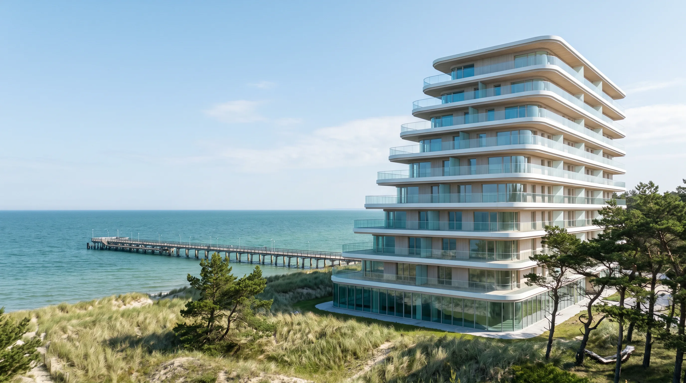
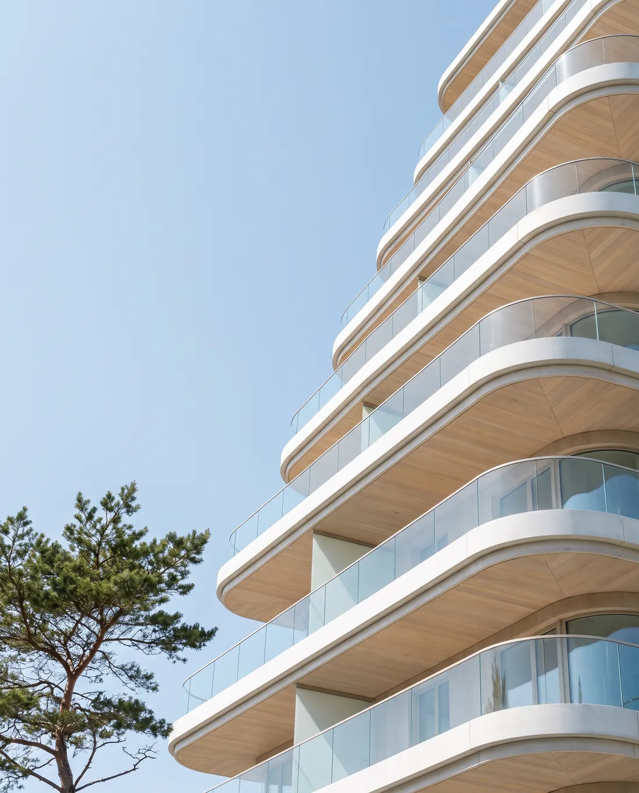
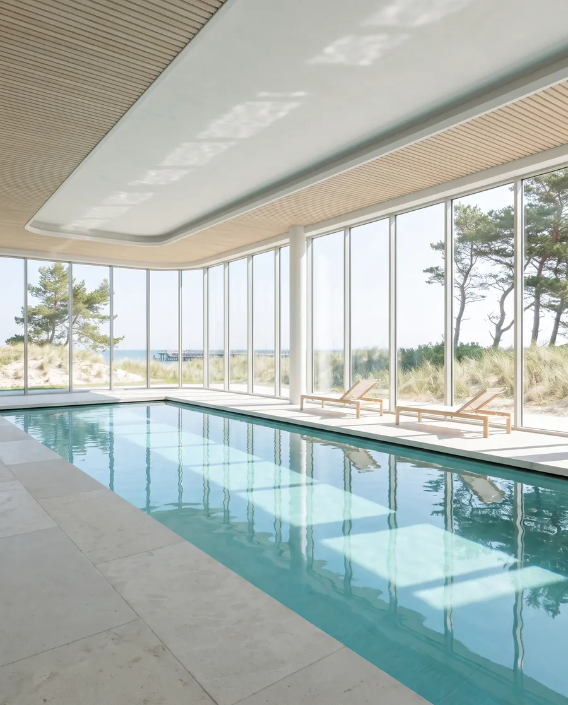
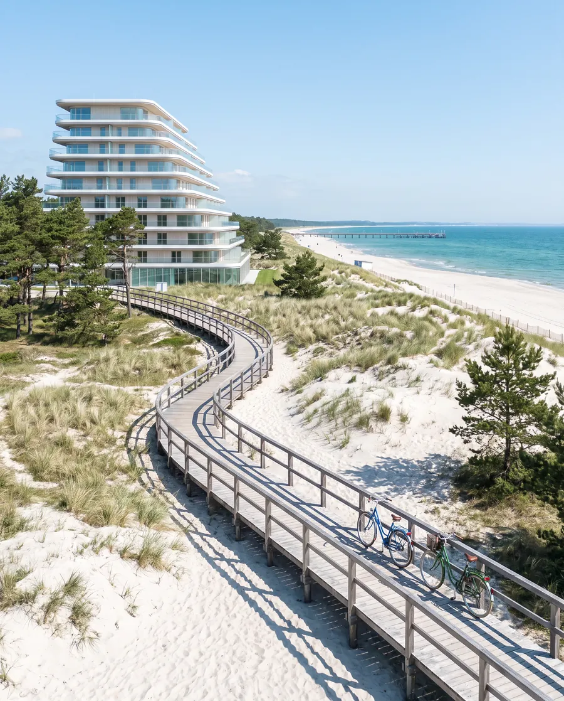
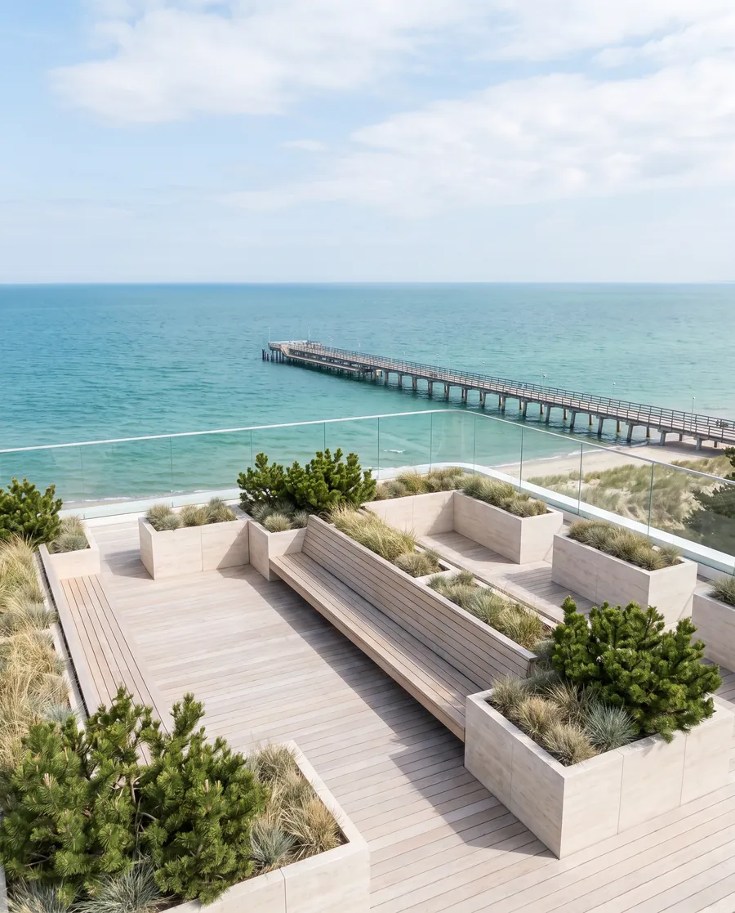
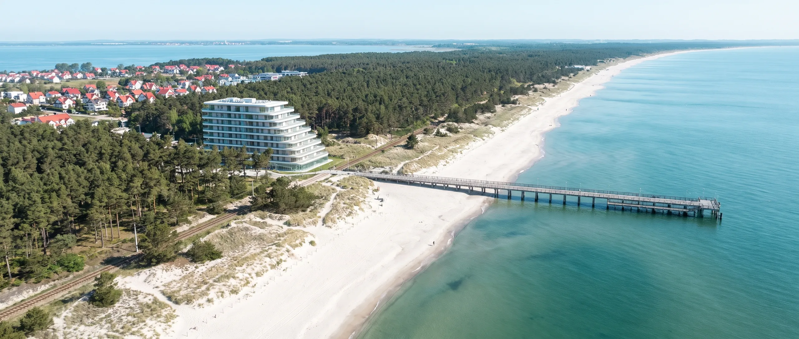
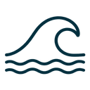
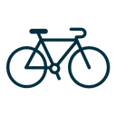

Pomost, apartamenty nad Zatoką Gdańską. Wybierz piętro
Najedź na piętro, a jego okna się rozjaśnią. Kliknij je albo ustaw suwak i wejdź przez szybę do środka.
3 pokoje, narożne
Od 68 do 84 m², taras od 16 do 24 m². Prosto na zatokę i molo.
- Cena
- od 1 790 000 zł
- Wolne
- 4 z 5
Piętro 6, trzy pokoje
Każde piętro ma swój pomost
Tarasy wysuwają się nad wydmy jak pomosty nad wodę. Im wyżej, tym głębiej cofa się elewacja, więc żaden taras nie zasłania widoku temu poniżej.
- pięter z tarasami
- 9
- mieszkań
- 48
- największy taras
- 38 m²

Dom zaczyna się przy plaży

Basen z widokiem na wydmy
Basen 18 m na parterze, przeszklony od strony wydm. Otwarty dla mieszkańców od 6:00 do 22:00.

Kładka na plażę
Prywatne zejście przez wydmy. Od drzwi klatki do brzegu morza jest 90 metrów.

Ogród na dachu
Trawy, sosny górskie i długa ławka z widokiem na molo. Wspólny dla wszystkich mieszkańców.

Morze za progiem
Pomost stoi między lasem a plażą w Gdyni. Do centrum dojedziesz kolejką SKM, a do molo dojdziesz brzegiem.

Plaża90 m- Molo450 m
- Las2 min pieszo
- Stacja SKM8 min pieszo

Bulwar10 min rowerem- Lotnisko30 min autem
Zapisz się na prezentację
Pokażemy Ci wybrane piętro na miejscu i w makiecie. Odpowiadamy w ciągu jednego dnia roboczego.
- Pawilon sprzedaży
- przy budowie, Gdynia
- Godziny
- pon.-pt. 9:00-18:00
sob. 10:00-14:00
Dziękujemy.
Odezwiemy się w ciągu jednego dnia roboczego, żeby ustalić termin prezentacji.